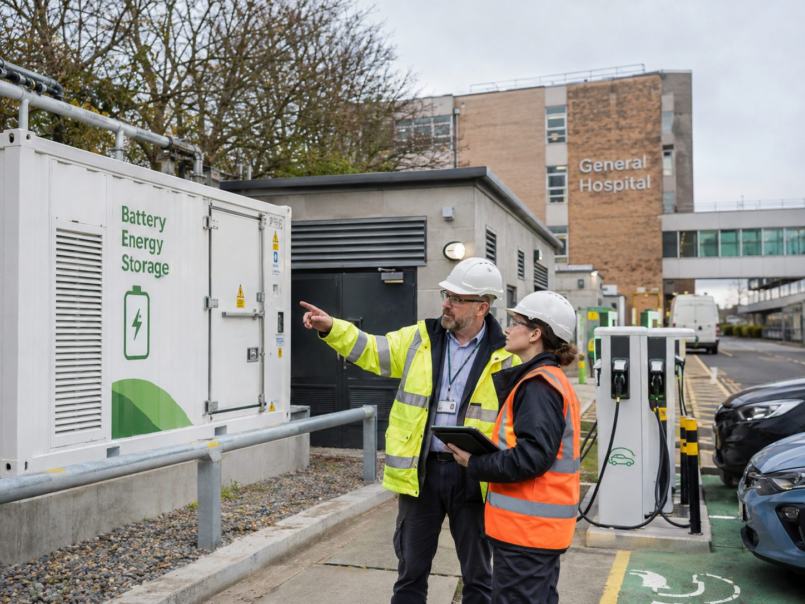

Your agreed supply capacity, in kVA, is the most your site may draw from the network. Compare it with your busiest half hours, converted from kW to kVA, and the gap is your headroom. Check it in winter, when heat pumps add the most load, and with any CHP switched off. If the headroom is smaller than the new load, you need to cut demand elsewhere, add on-site generation or storage, or apply to your network operator for more capacity, which can take a long time.
Find the numbers
- Agreed supply capacity (kVA) is on your electricity bill or in your connection agreement. Large hospitals may have several supplies, each with its own capacity.
- Half-hourly data for each supply, for at least 12 months, so the winter peaks are in it. See getting your data.
- Power factor. Your bill may show reactive power charges. If you don't know your power factor, 0.95 is a common working assumption.
Run the check
- Load each supply's file into the analyser and enter its agreed capacity and power factor on the Capacity tab.
- Look at the busiest half hours and the months they fall in. On some hospital sites the electrical peak is in summer, from cooling, but heat pumps will create a new winter peak.
- Enter the new load as a test load, for example the electrical input of a heat pump scheme or the output of a CHP engine you plan to remove, and keep a safety margin, such as 10%.
- Download the PDF. It gives your capital planning group and your network operator the same evidence.
Rough sizes of new loads
| New load | Rough electrical demand |
|---|---|
| Heat pumps delivering 1 MW of heat on a cold day, efficiency 2.5 | About 400 kW (420 kVA at 0.95) |
| Removing a 1 MW gas CHP engine | About 1 MW more import (1,050 kVA at 0.95) |
| Ten 7 kW staff car chargers running together | 70 kW |
| Two 50 kW rapid chargers for fleet vehicles | 100 kW |
These are illustrations. Your designer will size the real loads, and smart charging and controls can reduce what is needed at the peak.
If the headroom isn't there

- Cut the peak first. Controls, chiller sequencing and ventilation schedules often take tens of kilowatts off the busiest half hours. See energy efficiency.
- Generate on site. Solar reduces daytime import, but it does little on winter evenings when heat pump demand is high. Batteries can move energy into those hours.
- Manage new loads. Smart EV charging and heat pump controls can stay within a limit, using thermal storage to shift heat.
- Apply early. Connection upgrades can take years. The Salix guidance on heat decarbonisation plans asks for the electricity loading capacity to support a switch to electric heating, so an early application belongs in the plan.1
Resilience
Hospitals keep standby generators and resilient supply arrangements for essential services. Moving heat to electricity means heat now depends on those arrangements too. Make sure the electrical resilience design, usually under HTM 06-01 in England, is reviewed alongside any heat pump scheme, and that new buildings meet the NHS Net Zero Building Standard.2
Sources
Checked 18 November 2026.
Questions people ask
What is agreed supply capacity?
The maximum your site may draw from the electricity network, in kVA, set in your connection agreement and shown on many bills. Going over it can bring charges and puts the supply at risk.
Why check headroom in winter?
Heat pumps draw the most electricity in the coldest weeks. A site whose peak is in summer, from cooling, can still run out of capacity once heat is electrified.
Does my half-hourly data include the CHP?
No. The main meter records what the site draws from the grid, which is what the CHP does not supply. Add the CHP generation meter's data to see true demand.